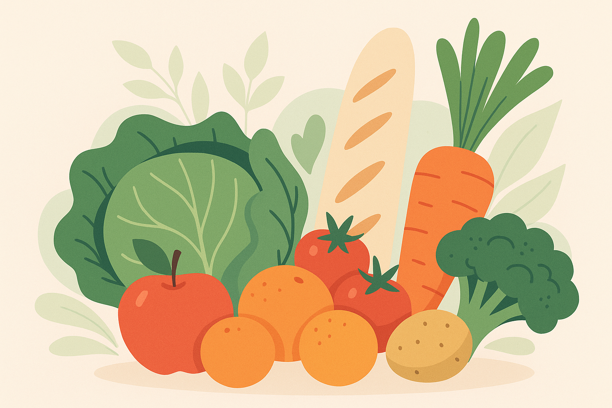

Bienvenue chez ToujoursBon
Nous proposons des produits encore parfaitement consommables à prix réduits pour lutter contre le gaspillage alimentaire.
Pourquoi choisir ToujoursBon ?
Économique
Jusqu’à 70% moins cher
Écologique
Réduction du gaspillage alimentaire
Local
Produits issus de la région